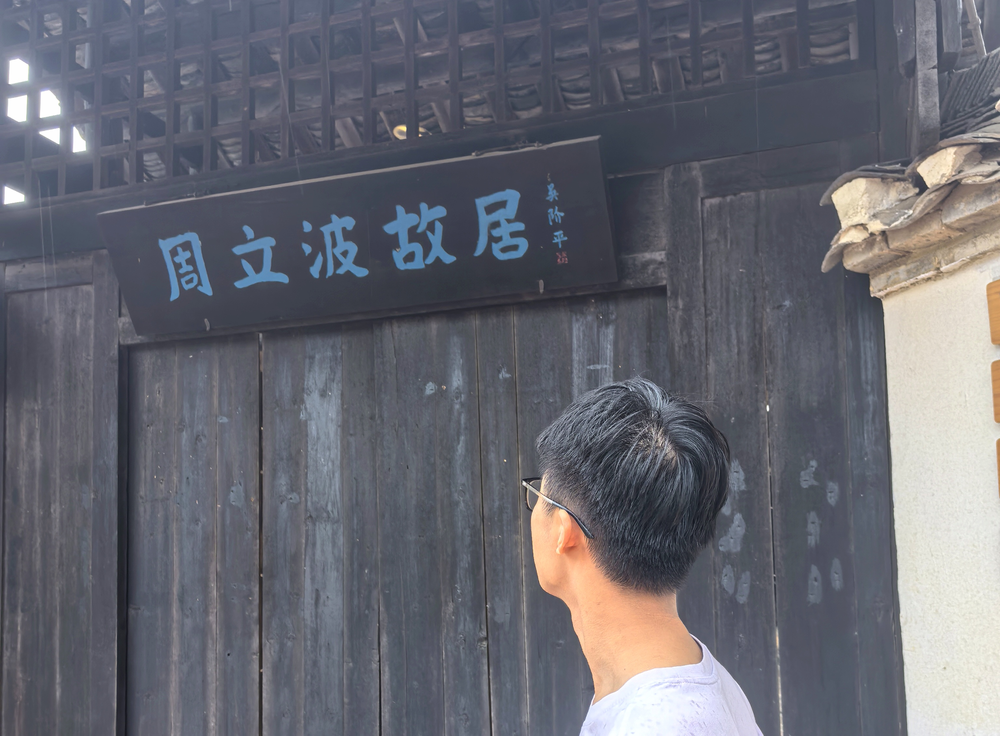

行走于故居之间
走进故居，首先感受到的不是单纯的怀旧，而是一种沉甸甸的历史感。墙面、屋檐、陈设与文字，都像在低声讲述一个时代如何被轻轻地改变，又如何被深深地记住。
参观的过程让我意识到，文脉并不是一成不变的古老符号，而是不断在现实生活中被重塑、被解释、被传承的精神血脉。
关于中华文脉变迁的体会
从周立波的创作与人生来看，中华文化的传承并不是简单地保存旧物，而是在时代冲击中寻找新的表达方式。旧有的乡土记忆、家国情怀与现代社会意识，彼此碰撞，形成了今天我们仍能感受到的文化深度。
这也提醒我们：真正的文化传承，不是停留在陈列之中，而是在每一次回望与反思中，让历史活起来，让精神继续向前。
参观感悟
- 从个人命运看时代变迁
- 从文学作品看文化传承
- 从旧居回望中华精神延续
参观时的画面与感受



“当我们站在故居前，看到的不是一座房子，而是一段被时间沉淀下来的文明记忆。”